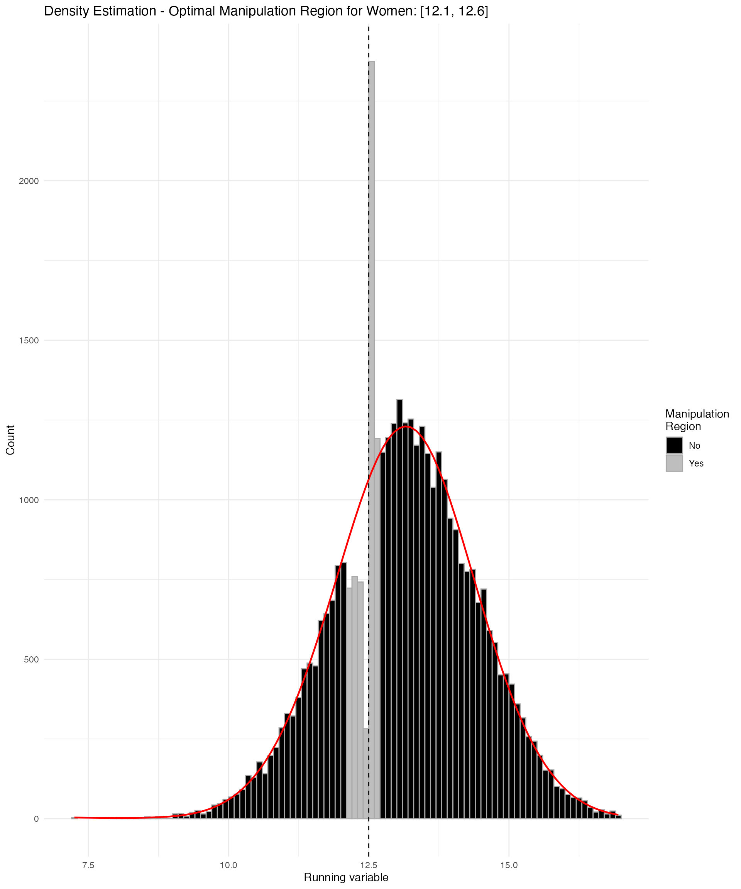
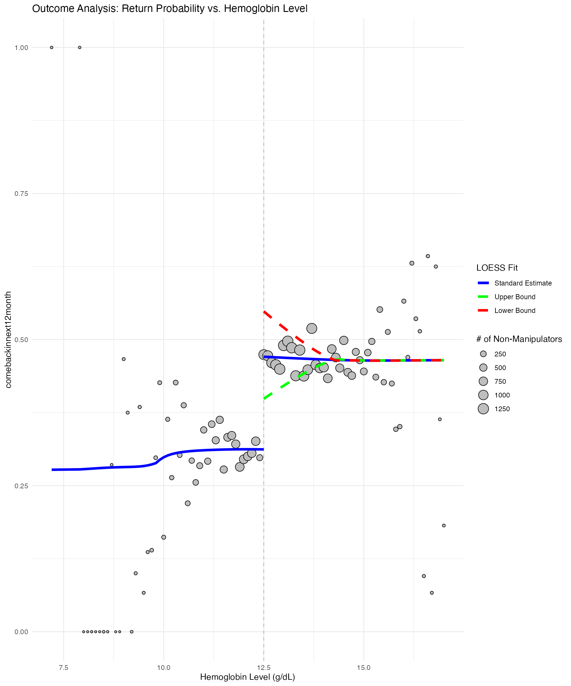
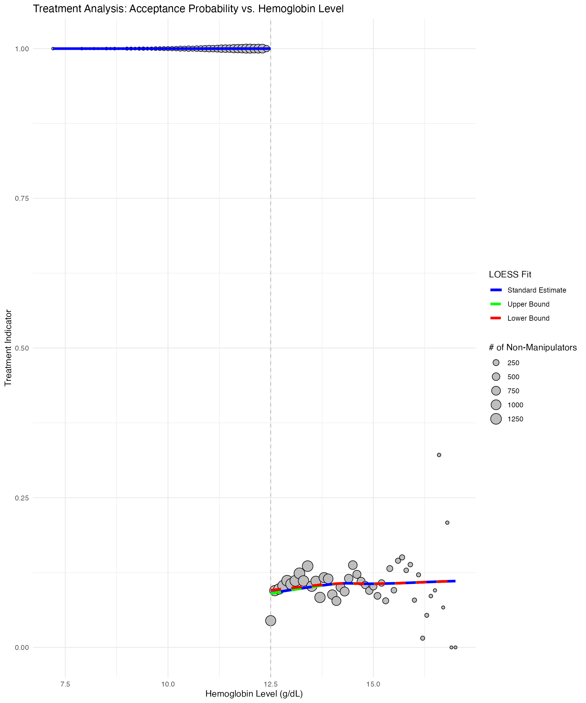

blood-donation-analysis.RmdThe rdpartial package implements partial identification
methods for regression discontinuity designs when units may manipulate
the running variable. This vignette demonstrates the package
functionality using simulated blood donation data,
where potential donors near the hemoglobin cutoff may influence their
readings.
Standard RDD estimators assume no manipulation in the running
variable. When this assumption fails, estimates may be severely biased.
The rdpartial package provides robust bounds on treatment
effects that remain valid under various manipulation scenarios. The
methodology is detailed in Rosenman et al.
(2025).
The package addresses manipulation concerns by:
Acknowledging manipulation uncertainty: Rather than assuming no manipulation, the approach explicitly models manipulation intervals where units may influence their running variable values.
Providing bounds: Instead of point estimates that may be biased, the method delivers bounds that capture the range of plausible treatment effects under different manipulation scenarios.
Ensuring robustness: The bounds account for worst-case manipulation within the specified region. The bounds remain valid regardless of the exact manipulation pattern, provided manipulation does not exceed the assumed region boundaries.
# Install from GitHub (development version)
if (!requireNamespace("devtools", quietly = TRUE)) {
install.packages("devtools")
}
devtools::install_github("rajkumarkarthik/rdpartial")We begin by setting key parameters for our analysis. These can be modified to explore different scenarios or replicate specific results.
# Analysis settings
analysisGender <- "F" # Focus on female donors
cutoff <- ifelse(analysisGender == "M", 13.5, 12.5) # Hemoglobin threshold (g/dL)
cutoff_upper <- ifelse(analysisGender == "M", 18.0, 17.0) # Upper bound for analysis range
# Outcome and treatment variables
outcome_col <- "comebackinnext12month" # Binary: returned within 12 months
treatment_col <- "accepted" # Binary: 1 = accepted, 0 = deferred
treat_direction <- "decrease" # Direction of treatment effect at cutoff
# Estimation parameters
poly_order <- 1L # Local polynomial order
num_folds <- 5L # Cross-validation folds for density estimation
# Parallel computing settings
n_cores <- parallel::detectCores() - 1L # Leave one core freeThe primary input to rdpartial functions is the
specification of manipulation intervals where units may influence their
running variable values. The analysis tests multiple manipulation
regions to assess robustness across different manipulation
assumptions.
# Define candidate manipulation intervals
# These represent different assumptions about manipulation extent
if(analysisGender == 'F') {
manip_regions <- list(
c(cutoff - 0.1, cutoff), # Narrow manipulation: 0.1 g/dL below cutoff
c(cutoff - 0.2, cutoff), # Moderate manipulation: 0.2 g/dL below cutoff
c(cutoff - 0.3, cutoff), # Wide manipulation: 0.3 g/dL below cutoff
c(cutoff - 0.4, cutoff), # Very wide manipulation: 0.4 g/dL below cutoff
c(cutoff - 0.1, cutoff + 0.1), # Symmetric narrow manipulation
c(cutoff - 0.2, cutoff + 0.1), # Asymmetric moderate manipulation
c(cutoff - 0.3, cutoff + 0.1), # Asymmetric wide manipulation
c(cutoff - 0.4, cutoff + 0.1), # Asymmetric very wide manipulation
c(cutoff - 0.1, cutoff + 0.2), # Extended upper manipulation
c(cutoff - 0.2, cutoff + 0.2), # Extended moderate manipulation
c(cutoff - 0.3, cutoff + 0.2), # Extended wide manipulation
c(cutoff - 0.4, cutoff + 0.2) # Extended very wide manipulation
)
} else if(analysisGender == 'M') {
# For males, use a single manipulation region based on empirical analysis
manip_regions <- list(c(cutoff - 0.6, cutoff + 0.1))
}
cat("Testing", length(manip_regions), "manipulation regions for",
ifelse(analysisGender == 'F', "women", "men"), "\n")
#> Testing 12 manipulation regions for womenThe analysis uses simulated blood donation data that replicates the structure of the original study. The simulated data is publicly available for demonstration purposes in the study since the original study data consists of confidential medical records.
# Load simulated data from GitHub repository
# NOTE: This is simulated data, not the original confidential medical records
data_url <- "https://raw.githubusercontent.com/rajkumarkarthik/rdpartial-data/main/Rosenman.et.al.2025_simulated_data_all.csv"
cat("Loading simulated data from GitHub repository...\n")
#> Loading simulated data from GitHub repository...
raw <- read.csv(data_url)
# Extract and clean the relevant dataset
dat <- raw %>%
filter(gender == analysisGender,
hlevel >= 0,
hlevel <= cutoff_upper) %>% # Restrict to analysis range
mutate(
hlevel = round(hlevel, 1), # Round hemoglobin to nearest 0.1
age = ifelse(is.na(age), mean(age, na.rm = TRUE), age) # Impute missing age
)
# Additional filtering for male analysis (exclude plasma donations)
if(analysisGender == 'M') {
dat <- dat %>%
filter(donationtype != 'Plasma')
}
# For time-to-next-donation outcome, filter to those with valid follow-up
if (outcome_col == "Ndaytonextdonation") {
dat <- dat %>%
filter(!is.na(Ndaytonextdonation), !is.infinite(Ndaytonextdonation))
}
cat("Analysis dataset: ", nrow(dat), "observations\n")
#> Analysis dataset: 38463 observations
cat("Outcome variable:", outcome_col, "\n")
#> Outcome variable: comebackinnext12month
cat("Treatment variable:", treatment_col, "\n")
#> Treatment variable: acceptedThe analysis requires constructing a histogram of the running variable and computing tricubic kernel weights for local polynomial estimation.
# Create histogram for density estimation
hist_df <- dat %>%
count(hlevel, name = "freq") %>%
arrange(hlevel) %>%
rename(x = hlevel)
cat("Histogram created with", nrow(hist_df), "unique hemoglobin values\n")
#> Histogram created with 93 unique hemoglobin values
# Compute tricubic kernel weights
# These weights give more influence to observations closer to the cutoff
ix_left <- dat$hlevel < cutoff
ix_right <- !ix_left
w_kernel <- numeric(nrow(dat))
w_kernel[ix_left] <- rdpartial:::.tricube(cutoff - dat$hlevel[ix_left])
w_kernel[ix_right] <- rdpartial:::.tricube(dat$hlevel[ix_right] - cutoff)
cat("Kernel weights computed for", sum(ix_left), "left-side and",
sum(ix_right), "right-side observations\n")
#> Kernel weights computed for 10352 left-side and 28111 right-side observationsThe estimation procedure tests each manipulation region, with automatic spline specification selection via cross-validation. Parallel processing is employed for computational efficiency.
# Define analysis function for a single manipulation region
analyze_region <- function(j, region, hist_df, dat, cutoff, num_folds,
w_kernel, outcome_col, treatment_col, poly_order,
treat_direction) {
# Density estimation to obtain non-manipulated counts
dens_out <- rdpartial:::.density_estimation(
hist_df = hist_df,
manip_region = region,
cutoff = cutoff,
knot_options = 3:8,
mod_types = "smooth",
num_folds = num_folds,
make_plot = TRUE
)
# Partial-identification bounds computation (fuzzy design)
bnds <- rdpartial::bounds_fuzzy(
x = dat$hlevel,
y = dat[[outcome_col]],
z = dat[[treatment_col]],
cutoff = cutoff,
true_counts = dens_out$counts,
weights = w_kernel,
poly_order = poly_order,
treat_direction = treat_direction,
bounds = "both",
runVarPlots = TRUE,
ylab = outcome_col,
xlab = "Hemoglobin Level (g/dL)"
)
# Return comprehensive results
list(
region_id = j,
bounds = bnds,
avg_cv_sse = dens_out$avg_cv_sse,
avg_sse = dens_out$avg_sse,
knots = dens_out$knots,
density_plot = dens_out$plot
)
}
cat("Starting parallel analysis across", length(manip_regions), "manipulation regions...\n")
#> Starting parallel analysis across 12 manipulation regions...
cat("Using", n_cores, "cores for parallel computation\n\n")
#> Using 11 cores for parallel computation
# Set up progress reporting
start_time <- Sys.time()
# Parallel execution with progress updates
if(.Platform$OS.type == "windows") {
# Use sequential processing on Windows (with progress bar)
cat("Windows detected: using sequential processing with progress bar\n")
pb <- txtProgressBar(min = 0, max = length(manip_regions), style = 3)
results <- vector("list", length(manip_regions))
for(j in seq_along(manip_regions)) {
region <- manip_regions[[j]]
cat(sprintf("\n• Processing Region %d: [%0.2f, %0.2f]\n", j, region[1], region[2]))
results[[j]] <- analyze_region(j, region, hist_df, dat, cutoff, num_folds,
w_kernel, outcome_col, treatment_col,
poly_order, treat_direction)
setTxtProgressBar(pb, j)
}
close(pb)
} else {
# Use parallel processing on Unix-like systems
cat("Unix-like system detected: using parallel processing\n")
# Display progress by printing region information
for(j in seq_along(manip_regions)) {
region <- manip_regions[[j]]
cat(sprintf("• Queued Region %d: [%0.2f, %0.2f]\n", j, region[1], region[2]))
}
cat("\nExecuting parallel analysis...\n")
# Execute in parallel
results <- parallel::mclapply(seq_along(manip_regions), function(j) {
analyze_region(j, manip_regions[[j]], hist_df, dat, cutoff, num_folds,
w_kernel, outcome_col, treatment_col, poly_order, treat_direction)
}, mc.cores = n_cores)
}
#> Unix-like system detected: using parallel processing
#> • Queued Region 1: [12.40, 12.50]
#> • Queued Region 2: [12.30, 12.50]
#> • Queued Region 3: [12.20, 12.50]
#> • Queued Region 4: [12.10, 12.50]
#> • Queued Region 5: [12.40, 12.60]
#> • Queued Region 6: [12.30, 12.60]
#> • Queued Region 7: [12.20, 12.60]
#> • Queued Region 8: [12.10, 12.60]
#> • Queued Region 9: [12.40, 12.70]
#> • Queued Region 10: [12.30, 12.70]
#> • Queued Region 11: [12.20, 12.70]
#> • Queued Region 12: [12.10, 12.70]
#>
#> Executing parallel analysis...
end_time <- Sys.time()
cat(sprintf("\nAnalysis completed in %.2f minutes\n",
as.numeric(difftime(end_time, start_time, units = "mins"))))
#>
#> Analysis completed in 1.48 minutesThe following sections present bounds estimates across manipulation regions and identify the optimal specification based on cross-validation performance.
# Extract bounds matrix
bounds_mat <- do.call(rbind, lapply(results, function(x) x$bounds$bounds))
rownames(bounds_mat) <- paste0("R", seq_along(manip_regions))
cat("Partial-identification bounds across manipulation regions:\n")
#> Partial-identification bounds across manipulation regions:
print(round(bounds_mat, 4))
#> lower upper
#> R1 -0.2431 -0.1016
#> R2 -0.2560 -0.0952
#> R3 -0.2579 -0.0989
#> R4 -0.2555 -0.1012
#> R5 -0.2488 -0.0955
#> R6 -0.2569 -0.0960
#> R7 -0.2606 -0.0958
#> R8 -0.2611 -0.0952
#> R9 -0.2529 -0.0909
#> R10 -0.2608 -0.0934
#> R11 -0.2620 -0.0943
#> R12 -0.2614 -0.0948
# Extract model selection diagnostics
sse_tbl <- do.call(rbind, lapply(results, function(x)
c(cv_sse = x$avg_cv_sse, sse = x$avg_sse, knots = x$knots)))
rownames(sse_tbl) <- paste0("R", seq_along(manip_regions))
cat("\nSpline cross-validation diagnostics:\n")
#>
#> Spline cross-validation diagnostics:
print(round(sse_tbl, 4))
#> cv_sse sse knots
#> R1 9641.1809 9306.6494 8
#> R2 2813.2317 2692.4843 4
#> R3 1181.5722 1095.7233 4
#> R4 949.0017 846.0292 4
#> R5 174775.8181 193822.9014 5
#> R6 4771.0980 4875.6901 8
#> R7 1222.3559 1163.9711 4
#> R8 779.5725 745.4649 7
#> R9 254836.9878 349265.1760 7
#> R10 24922.8908 18001.2863 8
#> R11 3155.8988 2954.9786 8
#> R12 898.2243 867.4273 5
# Identify optimal manipulation region (lowest cross-validation error)
optIndex <- which.min(sse_tbl[, "cv_sse"])
opt_region <- manip_regions[[optIndex]]
cat(sprintf("\nOptimal manipulation region: R%d [%.2f, %.2f]\n",
optIndex, opt_region[1], opt_region[2]))
#>
#> Optimal manipulation region: R8 [12.10, 12.60]
cat(sprintf("Cross-validation SSE: %.4f\n", sse_tbl[optIndex, "cv_sse"]))
#> Cross-validation SSE: 779.5725
cat(sprintf("Optimal bounds: [%.4f, %.4f]\n",
bounds_mat[optIndex, "lower"], bounds_mat[optIndex, "upper"]))
#> Optimal bounds: [-0.2611, -0.0952]The package generates diagnostic plots for density estimation, outcome analysis, and treatment assignment patterns.
# Plot density estimation for optimal region
density_plot <- results[[optIndex]]$density_plot +
ggtitle(paste0('Density Estimation - Optimal Manipulation Region for ',
ifelse(analysisGender == 'F', "Women", "Men"),
': [', paste(round(opt_region, 2), collapse = ', '), ']')) +
theme_minimal()
print(density_plot)
# Plot outcome variable
outcome_plot <- results[[optIndex]]$bounds$yPlot +
ggtitle("Outcome Analysis: Return Probability vs. Hemoglobin Level") +
theme_minimal()
print(outcome_plot)
# Plot treatment variable
treatment_plot <- results[[optIndex]]$bounds$zPlot +
ggtitle("Treatment Analysis: Acceptance Probability vs. Hemoglobin Level") +
theme_minimal()
print(treatment_plot)
Bootstrap confidence intervals are computed using the
bootstrap_bounds() function, which resamples observations
while preserving the running variable distribution.
# Bootstrap parameters
n_boot <- 100 # Increase as needed at the cost of slower computation
cat("Computing bootstrap confidence intervals...\n")
#> Computing bootstrap confidence intervals...
cat(sprintf("Bootstrap replications: %d\n", n_boot))
#> Bootstrap replications: 100
cat(sprintf("Parallel cores: %d\n", n_cores))
#> Parallel cores: 11
cat("This may take several minutes...\n\n")
#> This may take several minutes...
# Enhanced bootstrap with progress reporting
start_boot_time <- Sys.time()
# Display initial information
cat("Bootstrap analysis configuration:\n")
#> Bootstrap analysis configuration:
cat(sprintf("• Simulated dataset: %d observations (%s donors)\n", nrow(dat),
ifelse(analysisGender == 'F', "female", "male")))
#> • Simulated dataset: 38463 observations (female donors)
cat(sprintf("• Manipulation regions: %d scenarios\n", length(manip_regions)))
#> • Manipulation regions: 12 scenarios
cat(sprintf("• Bootstrap replications: %d\n", n_boot))
#> • Bootstrap replications: 100
cat(sprintf("• Parallel processing: %s\n",
ifelse(.Platform$OS.type != "windows", "enabled", "disabled (Windows)")))
#> • Parallel processing: enabled
if(.Platform$OS.type != "windows") {
cat("Note: Progress updates are limited during parallel bootstrap execution\n")
cat("to avoid output conflicts. Please be patient...\n\n")
}
#> Note: Progress updates are limited during parallel bootstrap execution
#> to avoid output conflicts. Please be patient...
# Execute bootstrap with parallel processing enabled
bootBounds <- rdpartial::bootstrap_bounds(
data = dat,
running_var = 'hlevel',
outcome = outcome_col,
treatment = treatment_col,
cutoff = cutoff,
manip_regions = manip_regions,
estimator = 'fuzzy',
n_boot = n_boot,
parallel = (.Platform$OS.type != "windows"),
n_cores = n_cores,
progress = (.Platform$OS.type == "windows"),
seed = 2021
)
end_boot_time <- Sys.time()
boot_duration <- as.numeric(difftime(end_boot_time, start_boot_time, units = "mins"))
cat(sprintf("\nBootstrap analysis completed in %.2f minutes\n", boot_duration))
#>
#> Bootstrap analysis completed in 7.01 minutes
# Display bootstrap confidence intervals
cat("Bootstrap 95% Confidence Intervals:\n")
#> Bootstrap 95% Confidence Intervals:
print(bootBounds)
#> Bootstrap percentile CI (95 %):
#> lwr upr
#> region1 0.08099731 0.2646091
#> region2 0.07715977 0.2764490
#> region3 0.08084569 0.2772886
#> region4 0.08287764 0.2752808
#> region5 0.07527087 0.2702184
#> region6 0.07782431 0.2769964
#> region7 0.07776681 0.2798478
#> region8 0.07704128 0.2805929
#> region9 0.07289930 0.2724571
#> region10 0.07529783 0.2801953
#> region11 0.07619950 0.2814729
#> region12 0.07658755 0.2811485
#> attr(,"level")
#> [1] 0.95
# Enhanced results summary
cat("\nDetailed Bootstrap Results Summary:\n")
#>
#> Detailed Bootstrap Results Summary:
cat("====================================\n")
#> ====================================
ci_matrix <- bootBounds$ci
for(i in seq_len(nrow(ci_matrix))) {
region <- manip_regions[[i]]
cat(sprintf("Region %d [%.2f, %.2f]: CI = [%.4f, %.4f], Width = %.4f\n",
i, region[1], region[2],
ci_matrix[i, "lwr"], ci_matrix[i, "upr"],
ci_matrix[i, "upr"] - ci_matrix[i, "lwr"]))
}
#> Region 1 [12.40, 12.50]: CI = [0.0810, 0.2646], Width = 0.1836
#> Region 2 [12.30, 12.50]: CI = [0.0772, 0.2764], Width = 0.1993
#> Region 3 [12.20, 12.50]: CI = [0.0808, 0.2773], Width = 0.1964
#> Region 4 [12.10, 12.50]: CI = [0.0829, 0.2753], Width = 0.1924
#> Region 5 [12.40, 12.60]: CI = [0.0753, 0.2702], Width = 0.1949
#> Region 6 [12.30, 12.60]: CI = [0.0778, 0.2770], Width = 0.1992
#> Region 7 [12.20, 12.60]: CI = [0.0778, 0.2798], Width = 0.2021
#> Region 8 [12.10, 12.60]: CI = [0.0770, 0.2806], Width = 0.2036
#> Region 9 [12.40, 12.70]: CI = [0.0729, 0.2725], Width = 0.1996
#> Region 10 [12.30, 12.70]: CI = [0.0753, 0.2802], Width = 0.2049
#> Region 11 [12.20, 12.70]: CI = [0.0762, 0.2815], Width = 0.2053
#> Region 12 [12.10, 12.70]: CI = [0.0766, 0.2811], Width = 0.2046
# Highlight optimal region results
opt_ci <- ci_matrix[optIndex, ]
cat(sprintf("\nOptimal Region Results (R%d):\n", optIndex))
#>
#> Optimal Region Results (R8):
cat(sprintf("• Manipulation interval: [%.2f, %.2f] g/dL\n", opt_region[1], opt_region[2]))
#> • Manipulation interval: [12.10, 12.60] g/dL
cat(sprintf("• Point bounds: [%.4f, %.4f]\n",
bounds_mat[optIndex, "lower"], bounds_mat[optIndex, "upper"]))
#> • Point bounds: [-0.2611, -0.0952]
cat(sprintf("• 95%% CI: [%.4f, %.4f]\n", opt_ci["lwr"], opt_ci["upr"]))
#> • 95% CI: [0.0770, 0.2806]
cat(sprintf("• CI width: %.4f\n", opt_ci["upr"] - opt_ci["lwr"]))
#> • CI width: 0.2036The bounds matrix contains the range of plausible treatment effects under each manipulation scenario:
# The bounds tell us the range of plausible effects
print(bounds_mat[optIndex, ])
# Bootstrap confidence intervals add uncertainty quantification
print(bootBounds$ci[optIndex, ])Tight bounds excluding zero indicate robust identification of treatment effect direction and magnitude. Wide bounds or bounds including zero suggest substantial manipulation uncertainty or limited identification power.
Manipulation regions: Specify intervals based on institutional knowledge of manipulation possibilities. Multiple specifications should be tested for robustness assessment.
Computational parameters: The n_boot
parameter controls bootstrap replications (100-500 recommended),
knot_options determines spline flexibility (3:8 typically
sufficient), and parallel enables multicore processing on
Unix systems.
Data requirements: The package expects numeric running variables, binary outcomes (0/1) for standard applications, and binary treatment indicators (0/1). Missing values should be handled prior to analysis.
cat("Performance Summary:\n")
#> Performance Summary:
cat("===================\n")
#> ===================
cat(sprintf("Analysis duration: %.2f minutes\n",
as.numeric(difftime(end_time, start_time, units = "mins"))))
#> Analysis duration: 1.48 minutes
cat(sprintf("Bootstrap duration: %.2f minutes\n", boot_duration))
#> Bootstrap duration: 7.01 minutes
cat(sprintf("Total computation time: %.2f minutes\n",
as.numeric(difftime(end_boot_time, start_time, units = "mins"))))
#> Total computation time: 8.51 minutes
cat(sprintf("Parallel cores utilized: %d\n", n_cores))
#> Parallel cores utilized: 11
cat(sprintf("Bootstrap replications: %d\n", n_boot))
#> Bootstrap replications: 100
cat(sprintf("Manipulation regions tested: %d\n", length(manip_regions)))
#> Manipulation regions tested: 12
if(.Platform$OS.type != "windows") {
cat("\nParallel processing significantly reduced computation time.\n")
cat("Sequential processing would require substantially longer.\n")
} else {
cat("\nFor optimal performance on multi-core systems,\n")
cat("consider running this analysis on Unix-like systems\n")
cat("where parallel processing is fully supported.\n")
}
#>
#> Parallel processing significantly reduced computation time.
#> Sequential processing would require substantially longer.This vignette demonstrates rdpartial package
functionality for regression discontinuity designs with manipulation
concerns. The package provides robust bounds estimation through density
estimation, cross-validated model selection, and bootstrap inference.
Key methodological features include explicit manipulation modeling,
automatic spline specification selection, and parallel computational
implementation.
For more details on the theoretical foundations, see Rosenman et al. (2025). The package documentation provides additional technical details and examples for various use cases.